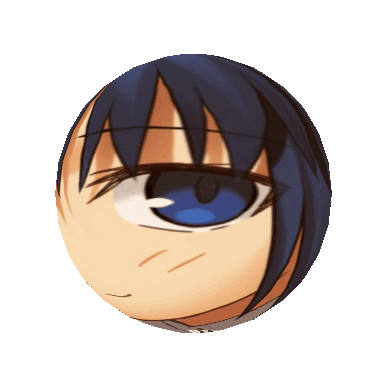

Bienvenue sur le site dédie à la traduction française de Tsukihime - A Piece of Blue Glass Moon! N'hésitez pas à venir nous soutenir sur nos réseaux pour aider le projet.
Après avoir frôlé la mort durant son enfance, Shiki Tohno a obtenu un mystérieux pouvoir lui permettant d'entrevoir des " lignes de mort " parcourant toute chose, des fractures lui permettant de détruire ce qu'elles traversent. Des années plus tard, de retour auprès de sa soeur Akiha, Shiki aspire simplement à vivre une vie ordinaire. Mais les sombres secrets de sa famille, et sa rencontre avec une jeune vampire du nom d'Arcueid, vont rapidement le plonger dans un monde surnaturel où la frontière entre l'humain et le monstrueux se révèle bien plus mince qu'en apparence.